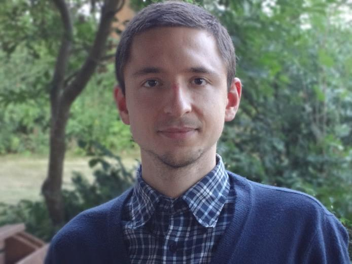

About

I am a postdoctoral researcher in the group of Prof. Daniel Rueckert at the Chair for AI in Healthcare and Medicine, Technical University of Munich. My work combines biophysical modeling, inverse problems, and machine learning, ranging from patient-specific simulations of tumor growth to real-time optical imaging of brain tissue. The goal of my research is to personalize radiotherapy planning and neurosurgery. I received my PhD (summa cum laude) from TUM, supervised by Prof. Bjoern Menze. Before that, I studied physics, with an MSc from TUM and a BSc from St. Petersburg Polytechnic University.
Publications
For an always up-to-date list, please visit my Google Scholar page.
* denotes equal contribution
2026


2025


2024


2023


2022

2021

2020

2019

Teaching & Mentoring
Teaching
- TU Munich, since 2022 AI in Medicine I & II Lectured and coordinated the course with practical projects focusing on medical AI for cohorts of 150+ graduate students.
- TU Munich, 2018–2020 Informatics I for Engineering Coordinated tutorial sessions for 200+ undergraduate students.
Student supervision
4 PhD (co-supervised) · 15 MSc · 9 BSc
Professional service
- Journal reviewer IEEE Transactions on Medical Imaging (TMI), Medical Image Analysis (MedIA)
- Conference reviewer MICCAI, MIDL, WACV
- Grant reviewer Croucher Foundation
Outreach
- Since 2026 Responsible and Applied AI Center, Kenya Designed the structure and curriculum of the center.
- Since 2022 Computer classes in Nepal and Kenya Built computer classrooms in remote schools.
Awards
- 2023: Summa cum laude, PhD thesis, TU Munich
- 2021–2022: Two-time winner (1st place), MICCAI FeTS (Federated Tumor Segmentation) Challenge
- 2021: Winner (1st place), MICCAI VALDO (Vascular Lesions Detection and Segmentation) Challenge
- 2020: 1st place, MICCAI FeTA (Fetal Brain Tissue Annotation and Segmentation) Benchmark
- 2018–2022: Marie Skłodowska-Curie PhD fellowship
- 2018: NVIDIA GPU grant (co-applicant)
- 2013–2015: Erasmus Mundus full MSc scholarship (awarded to approximately 2% of applicants)
- 2007–2011: State scholarship for excellence in study
News
- New preprint on wavelength selection for molecular composition inference from diffuse spectroscopy, led by Kevin Scibilia.
- Final defense pitch in Berlin for the BMBF GO-Bio next startup grant on rapid tumor biopsy analysis with hyperspectral imaging and ML.
- Brain tumor growth inversion via differentiable neural surrogates, with PhD student Jonas Weidner, at MIDL 2026.
- PREDICT-GBM, a multi-center platform for personalized glioblastoma radiotherapy planning, published in npj Digital Medicine.
- Started designing the structure for the Responsible and Applied AI Center in Kenya.
- Individualized glioma radiotherapy planning published in Nature Communications.
- Physics-regularized multi-modal image assimilation for brain tumor localization at NeurIPS 2024.
- Completed my PhD at TU Munich with summa cum laude.
- Research stay at the Biomedical Optics Research Lab, UCL London, with Prof. Ilias Tachtsidis.
Contact
ivan.ezhov@tum.de
Chair for AI in Healthcare and Medicine
Technical University of Munich (TUM) and TUM University Hospital
Munich, Germany